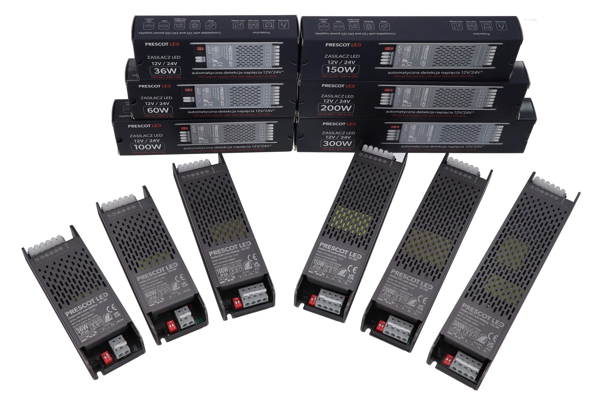

RÓWNIEŻ OD PRESCOT
Sterowanie LED.
Światło po Twojemu.
MONO, CCT, RGB, RGBW i RGBCCT.
Wybierz model i zobacz, jak zmienia się światło.
PRESCOT PR-MADMODEL 3D

Przygotowujemy model
Przeciągnij, aby obrócić model
AUTODETEKCJA 12 / 24 V
Zasilacz PR-MAD
Dobierz moc do swojej instalacji. PR-MAD automatycznie rozpoznaje napięcie wyjściowe 12 lub 24 V DC.
Podłączona taśma
PR-MAD12 Vwyjście DC
Autodetekcja dopasowuje wyjście do taśmy 12 V.
Zobacz efekt sterowaniaMONO